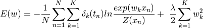

softmax¶
-
softmax.softmaxCost(theta, numClasses, inputSize, decay, data, labels)[source]¶ Computes and returns the (cost, gradient)
Parameters: - theta –
1d array of parameter. example of theta
numClasses = 10 inputSize = 28 * 28 theta = 0.005 * randn(numClasses * inputSize)
- numClasses – the number of classes (e.g. 10)
- inputSize – the size N of the input vector (e.g. 28 * 28 = 784)
- decay – weight decay parameter (e.g. lamda = 1e-4)
- data – the N x M input matrix where each row data[i, :] corresponds to a single sample e.g. 55000, 784
- labels – an M x 1 matrix containing the labels corresponding for the input data e.g. shape is (55000,)
Returns: Cost of the model
thetagrad : 1d array of gradient values
Return type: cost

Also the gradient is given by:

- theta –
-
softmax.softmaxGrad(theta, numClasses, inputSize, decay, data, labels)[source]¶ Computes and returns the (cost, gradient)
Parameters: - theta –
1d array of parameter. example of theta
numClasses = 10 inputSize = 28 * 28 theta = 0.005 * randn(numClasses * inputSize)
- numClasses – the number of classes (e.g. 10)
- inputSize – the size N of the input vector (e.g. 28 * 28 = 784)
- decay – weight decay parameter (e.g. lamda = 1e-4)
- data – the N x M input matrix where each row data[i, :] corresponds to a single sample e.g. 55000, 784
- labels – an M x 1 matrix containing the labels corresponding for the input data e.g. shape is (55000,)
Returns: Cost of the model
thetagrad : 1d array of gradient values
Return type: cost
Also the gradient is given by:
- theta –
-
softmax.softmaxPredict(theta, data)[source]¶ Computes and returns the softmax predictions in the input data.
Parameters: - theta – model parameters matrix of shape (numClasses x inputSize) e.g. 10, 784 (Here theta is taken after fitting the model.)
- data – the M x N input matrix (transpose of data has N examples.)
Returns: - 1d array of predictions where the output values z = theta_X has maximum label value.
pred.shape = (test_size,) e.g. (10k,) which is same as test_labels shape.
Return type: pred